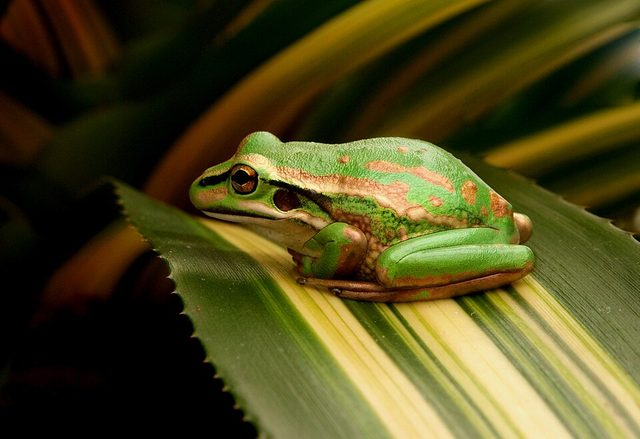

Frog 25 of 30 · page 3 of 3
Green and golden bell frog
Ranoidea aurea

A ground-dwelling tree frog with green and gold markings. It can reach 11 cm and usually stays close to the ground.
- Family
- Pelodryadidae
- Genus
- Ranoidea
- Conservation status
- Near Threatened (IUCN Red List)
- Range
- Eastern Australia.
Facts from the Wikipedia article on Green and golden bell frog ↗, retrieved 23 November 2026.